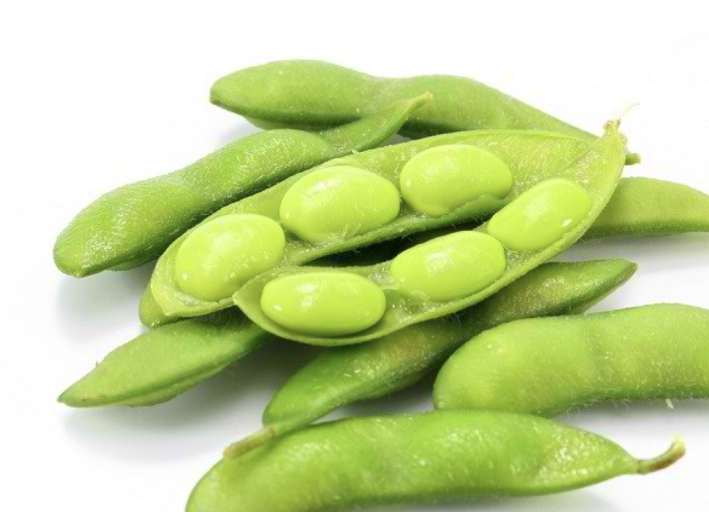

Edamame :D

Description
Sayur dan kacang-kacangan menjadi salah sumber makanan penting bagi kesehatan tubuh manusia. Salah satu jenis kacang-kacangan yang paling favorit yakni edamame. Edamame sendiri adalah kacang kedelai utuh yang masih muda saat dipanen. Kulit berwarna hijau terangnya memberikan kesan kesegaran tersendiri.
Pada kesempatan kali iniu saya akan menjelaskan bagaimana cara bikin edamame yang enak
Ingredients
- 500 gram edamame
- 5 siung bawang putih, cincang halus
- 3 sdm minyak kelapa
- 1 sdt kaldu jamur
- air secukupnya
Steps
- Tuang air ke dalam panci, lalu rebus edamame selama 15 menit sampai empuk.
- Panaskan minyak kelapa di dalam wajan sampai mendidih.
- Tumis cincangan bawang putih sampai harum dan terlihat layu.
- Masukkan edamame dan masak bersama bawang putih sampai tercampur merata.
- Bumbui dengan kaldu jamur, lalu masak hingga matang. Sajikan edamame garlic selagi hangat.